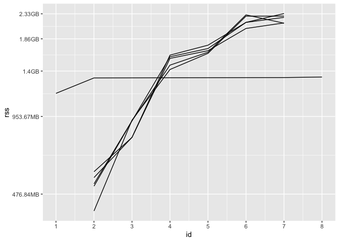
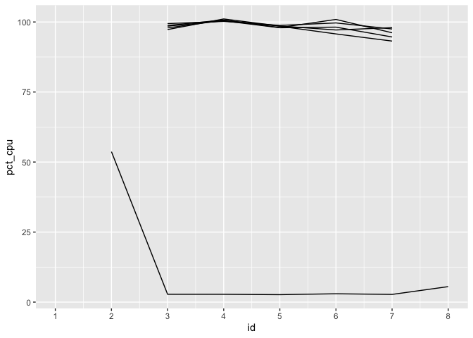

The goal of syrup is to measure memory and CPU usage of R code by regularly taking snapshots of calls to the system command ps. The package provides an entry point (albeit coarse) to profile usage of system resources by R code run in parallel.
The package name is an homage to syrupy (SYstem Resource Usage Profile …um, Yeah), a Python tool at jeetsukumaran/Syrupy.
Installation
Install the latest release of syrup from CRAN like so:
install.packages("syrup")You can install the development version of syrup like so:
pak::pak("simonpcouch/syrup")Example
The main function in the syrup package is the function by the same name. The main argument to syrup() is an expression, and the function outputs a tibble. Supplying a rather boring expression:
syrup(Sys.sleep(1))
#> # A tibble: 48 × 8
#> id time pid ppid name pct_cpu rss vms
#> <dbl> <dttm> <int> <int> <chr> <dbl> <bch:byt> <bch:>
#> 1 1 2024-07-03 11:42:33 67101 60522 R NA 112MB 392GB
#> 2 1 2024-07-03 11:42:33 60522 60300 rsession-arm64 NA 653MB 394GB
#> 3 1 2024-07-03 11:42:33 58919 1 R NA 773MB 393GB
#> 4 1 2024-07-03 11:42:33 97009 1 rsession-arm64 NA 128KB 394GB
#> 5 1 2024-07-03 11:42:33 97008 1 rsession-arm64 NA 128KB 394GB
#> 6 1 2024-07-03 11:42:33 97007 1 rsession-arm64 NA 240KB 394GB
#> 7 1 2024-07-03 11:42:33 97006 1 rsession-arm64 NA 240KB 394GB
#> 8 1 2024-07-03 11:42:33 97005 1 rsession-arm64 NA 128KB 394GB
#> 9 1 2024-07-03 11:42:33 91012 1 R NA 128KB 393GB
#> 10 1 2024-07-03 11:42:33 90999 1 R NA 128KB 393GB
#> # ℹ 38 more rowsIn this tibble, id defines a specific time point at which process usage was snapshotted, and the remaining columns show output derived from ps::ps(). Notably, pid is the process ID, ppid is the process ID of the parent process, pct_cpu is the percent CPU usage, and rss is the resident set size (a measure of memory usage).
The function works by:
- Setting up another R process
seshthat queries memory information at a regular interval, - Evaluating the supplied expression,
- Reading the memory information back into the main process from
sesh, - Closing
sesh, and then - Returning the memory information.
Application: model tuning
For a more interesting demo, we’ll tune a regularized linear model using cross-validation with tidymodels. First, loading needed packages:
Using future to define our parallelism strategy, we’ll set plan(multicore, workers = 5), indicating that we’d like to use forking with 5 workers. By default, future disables forking from RStudio; I know that, in the context of building this README, this usage of forking is safe, so I’ll temporarily override that default with parallelly.fork.enable.
local_options(parallelly.fork.enable = TRUE)
plan(multicore, workers = 5)Now, simulating some data:
set.seed(1)
dat <- sim_regression(1000000)
dat
#> # A tibble: 1,000,000 × 21
#> outcome predictor_01 predictor_02 predictor_03 predictor_04 predictor_05
#> <dbl> <dbl> <dbl> <dbl> <dbl> <dbl>
#> 1 3.63 -1.88 0.872 -0.799 -0.0379 2.68
#> 2 41.6 0.551 -2.47 2.37 3.90 5.18
#> 3 -6.99 -2.51 -3.15 2.61 2.13 3.08
#> 4 33.2 4.79 1.86 -2.37 4.27 -3.59
#> 5 34.3 0.989 -0.315 3.08 2.56 -5.91
#> 6 26.7 -2.46 -0.459 1.75 -5.24 5.04
#> 7 21.4 1.46 -0.674 -0.894 -3.91 -3.38
#> 8 21.7 2.21 1.28 -1.05 -0.561 2.99
#> 9 -8.84 1.73 0.0725 0.0976 5.40 4.30
#> 10 24.5 -0.916 -0.223 -0.561 -4.12 0.0508
#> # ℹ 999,990 more rows
#> # ℹ 15 more variables: predictor_06 <dbl>, predictor_07 <dbl>,
#> # predictor_08 <dbl>, predictor_09 <dbl>, predictor_10 <dbl>,
#> # predictor_11 <dbl>, predictor_12 <dbl>, predictor_13 <dbl>,
#> # predictor_14 <dbl>, predictor_15 <dbl>, predictor_16 <dbl>,
#> # predictor_17 <dbl>, predictor_18 <dbl>, predictor_19 <dbl>,
#> # predictor_20 <dbl>The call to tune_grid() does some setup sequentially before sending data off to the five child processes to actually carry out the model fitting. After models are fitted, data is sent back to the parent process to be combined. To better understand system resource usage throughout that process, we wrap the call in syrup():
res_mem <- syrup({
res <-
tune_grid(
linear_reg(engine = "glmnet", penalty = tune()),
outcome ~ .,
vfold_cv(dat)
)
})
res_mem
#> # A tibble: 158 × 8
#> id time pid ppid name pct_cpu rss vms
#> <dbl> <dttm> <int> <int> <chr> <dbl> <bch:byt> <bch:>
#> 1 1 2024-07-03 11:42:38 67101 60522 R NA 1.05GB 393GB
#> 2 1 2024-07-03 11:42:38 60522 60300 rsession-arm64 NA 653.44MB 394GB
#> 3 1 2024-07-03 11:42:38 58919 1 R NA 838.56MB 393GB
#> 4 1 2024-07-03 11:42:38 97009 1 rsession-arm64 NA 128KB 394GB
#> 5 1 2024-07-03 11:42:38 97008 1 rsession-arm64 NA 128KB 394GB
#> 6 1 2024-07-03 11:42:38 97007 1 rsession-arm64 NA 240KB 394GB
#> 7 1 2024-07-03 11:42:38 97006 1 rsession-arm64 NA 240KB 394GB
#> 8 1 2024-07-03 11:42:38 97005 1 rsession-arm64 NA 128KB 394GB
#> 9 1 2024-07-03 11:42:38 91012 1 R NA 128KB 393GB
#> 10 1 2024-07-03 11:42:38 90999 1 R NA 128KB 393GB
#> # ℹ 148 more rowsThese results are a bit more interesting than the sequential results from Sys.sleep(1). Look closely at the ppids for each id; after a snapshot or two, you’ll see five identical ppids for each id, and those ppids match up with the remaining pid in the one remaining R process. This shows us that we’ve indeed distributed computations using forking in that that one remaining R process, the “parent,” has spawned off five child processes from itself.
We can plot the result to get a better sense of how memory usage of these processes changes over time:
worker_ppid <- ps::ps_pid()
res_mem %>%
filter(ppid == worker_ppid | pid == worker_ppid) %>%
ggplot() +
aes(x = id, y = rss, group = pid) +
geom_line() +
scale_x_continuous(breaks = 1:max(res_mem$id))
At first, only the parent process has non-NA rss, as tidymodels hasn’t sent data off to any workers yet. Then, each of the 5 workers receives data from tidymodels and begins fitting models. Eventually, each of those workers returns their results to the parent process, and their rss is once again NA. The parent process wraps up its computations before completing evaluation of the expression, at which point syrup() returns. (Keep in mind: memory is weird. In the above plot, the total memory allotted to the parent session and its five workers at each ID is not simply the sum of those rss values, as memory is shared among them.) We see a another side of the story come together for CPU usage:
res_mem %>%
filter(ppid == worker_ppid | pid == worker_ppid) %>%
ggplot() +
aes(x = id, y = pct_cpu, group = pid) +
geom_line() +
scale_x_continuous(breaks = 1:max(res_mem$id))
The percent CPU usage will always be NA the first time a process ID is seen, as the usage calculation is based on change since the previous recorded value. As soon as we’re able to start measuring, we see the workers at 100% usage, while the parent process is largely idle once it has sent data off to workers.
Scope
While much of the verbiage in the package assumes that the supplied expression will be distributed across CPU cores, there’s nothing specific about this package that necessitates the expression provided to syrup() is run in parallel. Said another way, syrup will work just fine with “normal,” sequentially-run R code. That said, there are many better, more fine-grained tools for the job in the case of sequential R code, such as Rprofmem(), the profmem package, the bench package, and packages in the R-prof GitHub organization.
Results from syrup only provide enough detail for the coarsest analyses of memory and CPU usage, but they do provide an entry point to “profiling” system resource usage for R code that runs in parallel.